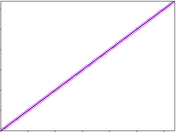
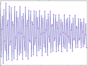

scans — Generate audio output using scanned synthesis.
ifn -- ftable containing the scanning trajectory. This is a series of numbers that contains addresses of masses. The order of these addresses is used as the scan path. It should not contain values greater than the number of masses, or negative numbers. See the introduction to the scanned synthesis section.
id -- ID number of the scanu opcode's waveform to use
iorder (optional, default=0) -- order of interpolation used internally. It can take any value in the range 1 to 4, and defaults to 4 if outside that range, which is quartic interpolation. The setting of 3 is cubic, 2 is quadratic and 1 is linear. The higher numbers are slower, but not necessarily better.
kamp -- output amplitude. Note that the resulting amplitude is also dependent on instantaneous value in the wavetable. This number is effectively the scaling factor of the wavetable.
kfreq -- frequency of the scan rate
Here is an example of the scanned synthesis. It uses the file scans.csd.
Example 941. Example of the scans opcode.
See the sections Real-time Audio and Command Line Flags for more information on using command line flags.
<CsoundSynthesizer> <CsOptions> ; Select audio/midi flags here according to platform -odac --limiter=0.95 ;;;realtime audio out & and limit loud sounds ;-iadc ;;;uncomment -iadc if realtime audio input is needed too ; For Non-realtime ouput leave only the line below: ; -o scans.wav -W ;;; for file output any platform </CsOptions> <CsInstruments> sr=44100 ksmps=32 nchnls=2 0dbfs=1 ; example by Menno Knevel 2024 instr 1 a0 = 0 ; no audio input ;scanu init, irate, ifnvel, ifnmass, ifnstif, ifncentr, ifndamp, kmass, kstif, kcentr, kdamp, ileft, iright, kpos, kstrngth, ain, idisp, id scanu 1, .01, 6, 2, 3, 4, 5, 2, .1, .1, -.01, .1, .5, 0, 0, a0, 1, 2 if (p6 == 0) then asig scans ampdb(p4), cpspch(p5), 7, 2 ; exponential trajectory elseif (p6 == 1) then asig scans ampdb(p4), cpspch(p5), 77, 2 ; linear trajectory else asig scans ampdb(p4), cpspch(p5), 777, 2 ; linear trajectory but only a small portion endif asig *= .000025 ; compensate volume due to 0dbfs = 1 outs asig, asig endin </CsInstruments> <CsScore> f1 0 128 7 0 64 1 64 0 f2 0 128 -7 1 128 1 f3 0 16384 -23 "string-128.matrxB" ; binary matrix, can be found in the examples folder of the manual f4 0 128 -7 0 128 2 f5 0 128 -7 1 128 1 f6 0 128 -7 0 128 0 f7 0 128 -5 .001 128 128 ; exponential trajectory f77 0 128 -7 0 128 128 ; linear trajectory f777 0 128 -7 10 128 20 ; linear trajectory but only a small portion i1 0 9 90 6.00 0 i1 9 12 90 7.00 0 i1 13 17 90 5.00 0 i1 31 9 90 6.00 1 i1 40 12 90 7.00 1 i1 44 17 90 5.00 1 i1 62 9 90 6.00 2 i1 71 12 90 7.00 2 i1 74 17 90 5.00 2 e </CsScore> </CsoundSynthesizer>
Here is another example of the scanned synthesis. It uses the file scans-2.csd.
Example 942. Second example of the scans opcode.
<CsoundSynthesizer> <CsOptions> ; Select audio/midi flags here according to platform -odac --limiter=0.95 ;;;realtime audio out & and limit loud sounds ; For Non-realtime ouput leave only the line below: ; -o scans-2.wav -W ;;; for file output any platform </CsOptions> <CsInstruments> ; example by Menno Knevel 2024 sr=44100 ksmps=32 nchnls=2 0dbfs=1 instr 1 initial ftgenonce 1, 0, 128, 10, 1 ; initial position = sine wave idispl ftgenonce 2, 0, 128, -7, .01, 128, .04 ; displace imass ftgenonce 3, 0, 128, -7, 5, 128, 15 ; masses icent ftgenonce 4, 0, 128, -7, 2.01, 128, .09 ; centering idamp ftgenonce 5, 0, 128, -7, -.1, 128, -.01 ; damping itraj1 ftgenonce 6, 0, 128, -7, 0, 128, 128 ; trajectory 1 itraj2 ftgenonce 66, 0, 128, -23, "/manual/examples/straightline_max128_128.traj" ; trajectory 2 itraj3 ftgenonce 666, 0, 128, -23, "/manual/examples/128-spiral-8,16,128,2,1over2.traj" ; trajectory 3 a0 = 0 ; no audio kline line .7, p3, 0 ; simple envelope itrajectory = p6 if (p6 == 6) then prints "\nlinear trajectory, reading through all of the masses\n" elseif (p6 == 66) then prints "\nthe same linear trajectory but written as an ASCII file\n" else prints "\na spiral trajectory - see images below\n" endif ;scanu2 init, irate, ifndisplace, ifnmass, imatrix, ifncentr, ifndamp, kmass, kmtrxstiff, kcentr, kdamp, ileft, iright, kpos, kdisplace, ain, idisp, id scanu2 1, .02, 2, 3, 100, 4, 5, 10, 0.6, 0.1, .9, .5, .1, 0, 0, a0, 0, 20 asigL scans kline, p4, itrajectory, 20 asigR scans kline, p4*1.01, itrajectory, 20 ; stereo asigL dcblock asigL asigR dcblock asigR outs asigL, asigR endin </CsInstruments> <CsScore> f100 0 0 -44 "/manual/examples/string_128.matrxT" ; text matrix i1 0.0 4 130.8127825 1.0 6 i1 5.0 4 109.99999987361387 1.0 66 i1 10.0 5 146.8323837899985 1.0 666 e </CsScore> </CsoundSynthesizer>
A plot of the table itraj1 ftgenonce 6, 0, 128, -7, 0, 128, 128 and itraj2 ftgenonce 66, 0, 128, -23, "/manual/examples/straightline_max128_128.traj":
and this is what the table itraj3 ftgenonce 666, 0, 128, -23, "/manual/examples/128-spiral-8,16,128,2,1over2.traj" looks like:
More information on the Scanned Synthesis opcodes: Working with Scanned Synthesis, written by Steven Yi, and some tutorials by Richard Boulanger.